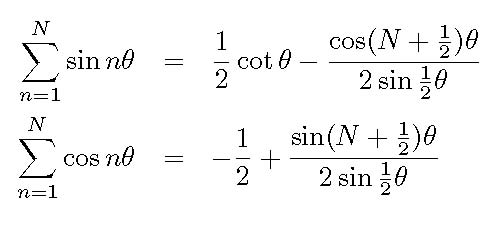
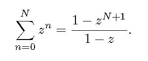

DAVID G. SIMPSON
Nanopedia
| Home |
| Blog |
| Personal |
| Professional |
| Software |
| Photos |
| Reference |
| Nanopedia |
| Wiki |
| Contact Me |
| NASA Site |
| PGCC Site |
| SCHS Site |
| Esperanto |
| Moon Rocks |
| S-M Comics |
| Mouse Site |
| Art Gallery |
LAGRANGE'S TRIGONOMETRIC IDENTITIES
In trigonometry, Lagrange's trigonometric identities, named after Joseph Louis Lagrange, are:[1][2]
Derivation
Lagrange's trigonometric identities may be derived by starting with the complex sum
Setting z=eiθ and equating the imaginary parts of both sides gives the first identity; equating the real parts of both sides gives the second.
References
[1]Eddie Ortiz Muñiz. “A Method for Deriving Various Formulas in Electrostatics and Electromagnetism Using Lagrange's Trigonometric Identities”. American Journal of Physics 21 (2): 140 (February 1953).[2]Alan Jeffrey and Hui-hui Dai. Handbook of Mathematical Formulas and Integrals (4th ed.), Section 2.4.1.6. Academic Press (2008). ISBN 9780123742889.
Contact Information
I may be contacted at: